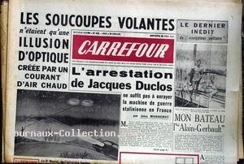
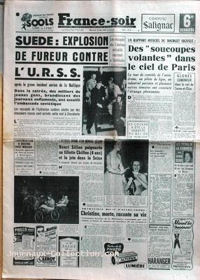
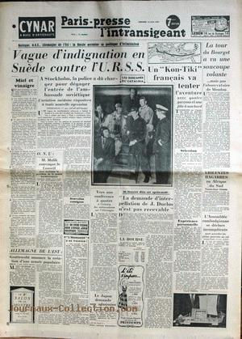

A Tombstone (Arizona), un pilote de la Navy
observe un disque rester stationnaire puis partir rapidement.
L'USAF déclare prendre le problème des ovnis au sérieux, beaucoup de rapports crédibles d'ovnis provenant de
Corée. Des pilotes ont observé des sphères ou des disques argentés, et des radars au Japon, à Okinawa et en Corée
ont détecté des cibles non identifiées
Ruppelt, Edward J.: The Report
on Unidentified Flying Objects, p. 192.
À Walla (Washington), le major W. C. Vollendorf
(ancien pilote militaire en réserve) observe un objet ovale avec un aileron effectuer une ascension rapide en
Cas Blue Book n° 1245 non expliqué.
Au lac Soap (Washington), Ray Lottman
observe 3 objets luisants voler horizontalement durant Cas Blue Book n°
1246 non expliqué.
A Los Angeles (Californie), des membres de la section de test radar de Hughes
Aircraft Co. repèrent une cible non-identifiée à
11000pieds, qui triple soudainement sa vitesse.
À Bayview (Washington), Larry McWade
observe un objet pourpre Cas Blue
Book n° 1249 non expliqué.
À Fulda (Allemagne de l'ouest), le 1er lieutenant John Hendry
(navigateur-photographe) sur un bombardier de reconnaissance RB-26C observe un objet d'un blanc de porcelaine
voler très rapidement Cas Blue Book n° 1250 non expliqué.
Dans la jungle du Yucatan, une expédition archéologique conduite par Alberto Ruz
Lhuillier et 3 de ses compagnons fait la découverte du sarcophage de Palenque, dans le comté de Chiapas, près
d'une cité maya.
A Albuquerque (Nouveau-Mexique), le sergent/S T.
H. Shorey observe durant un objet rond et brillant voler 5 à 6 fois aussi vite qu'un
chasseur F-86 Cas Blue Book n° 1256 non expliqué.
A Lubbock (Texas), Dan Benson et monsieur
Bacon observent durant 45 mn jusqu'à 8 objets circulaires jaunes ressemblant à
de grosses étoiles. Les 2 premiers sont en formation en ligne, les autres sont observés seuls
Cas
Blue Book n° 1255 non expliqué.
A la base de l'USAF de Offutt
(Omaha, Nebraska), le 2nd lieutenant W. R. Soper (officier de
contrôle top secret du SAC et ancien agent de
l'OSI) ainsi que 2 autres personnes observent un objet rouge
brillant rester stationnaire durant avant de partir rapidement en laissant une faible
traînée Cas Blue Book non expliqué.
( ?) Observation à la base de l'USAF de Kimpo (Corée)
Cas Blue
Book non expliqué.
À Albuquerque (Nouveau-Mexique), l'équipage du B-25
bomber N° 8840 à 11500pieds observe un objet rectangulaire semblant d'aluminium, d'environ 6pieds x 4pieds, voler à 250pieds ou 300pieds de leur appareil Cas Blue
Book n° 1260 non expliqué.
À Albuquerque (Nouveau-Mexique), J. D. Markland et sa femme observent 4 objets brillants voler horizontalement en
formation en diamant Cas Blue Book n° 1263 non expliqué.
À Issy-les-Moulineaux, observation
d'Henri Chaloupek.
Observation à Minneapolis (Minnesota)Cas Blue Book non expliqué.
Donald H. Menzel publie dans Time un article intitulé Ces Soucoupes
Volantes, et donne une explication de reflets de lumière.
Carrefour n° 404 du 11, indique que Les soucoupes volantes n'étaient qu'une illusion
d'optique créée par un courant d'air chaud

Vol de l'Espadon, 1er avion à réaction français.
A Marrakech (Maroc), le sergent/T H. D. Adams, utilisant un système radar SCR-584, détecte un blip non-identifié à 650
noeuds (750miles/h) à une altitude supérieure à 60000piedsCas Blue Book n° 1270 non expliqué.
A Eaubonne (Val d'oise), observation d'une sphère
Gazette du Val d'Oise, 1997-07-16.
A Fort Smith (Arkansas), un major et un lieutenant
colonel de l'US Army observent aux jumelles une boule orange avec une
queue voler à une faible vitesse angulaire Cas
Blue Book n° 1269 non expliqué
La famille Nahon observe une immense feuille argentée bordée d'une sorte de halo rouge qui se déplace par
saccade brusquement dans différentes directions (même observation que ci-après ?)
VSD 2007 H.
( ?) Un équipage de Air France et des contrôleurs de la tour de l'aéroport du Bourget
(France) observent une boule rouge brillante immobile pendant 1 h, puis la voit traverser le ciel au Sud-Ouest
du champ d'aviation.
A Middletown (Pennsylvanie), R. S. Thomas
(employé de la base de l'USAF de Olmstead et ancien contrôleur aérien) observe un objet rond et orange voyager
vers le sud, s'arrêter , tourner à l'est, s'arrêter à nouveau , et descendre.
Observation à Minneapolis (Minnesota)Cas Blue Book non expliqué.
France Soir du 18 juin, titrant : Des "soucoupes volantes" dans le ciel de Paris. La
tour de contrôle de l'aérodrome, un pilote de ligne, un ... et plusieurs ???? témoins ont constaté l'étrange
phénomène 
A Itenhaem (Brésil), une femme est réveillée par une
explosion et une puissante lumière bleue. Elle voit une flotte de disques stationner à 1 m du sol, à 550
m de sa maison. Ils restent là environ tandis que 2 personnages se tiennent debout sur l'un
des ovnis en observant le ciel, puis ils partent un par un.
A Halifax (Nova Scotia), un assistant météorologue
en manœuvre militaire de réserve, remarque ce qui semble être un grand disque argenté dans le ciel au sud-est
de Halifax. Il se déplace vers le sud-ouest durant environ à une altitude estimée entre 5000pieds et 8000pieds puis effectue une ascension et rentre dans les nuages altocumulus situés entre 11000pieds et 12000pieds. Si l'altitude estimée est exacte, d'après les données de point et d'élévation obtenues de l'observateur, le
diamètre du disque devait être d'environ 100pieds. Un grand appareil standard était dans le ciel à ce moment et l'objet semblant se déplacer plus vite que
l'avion. La vitesse de l'objet est estimée à 800miles/h au moins Good 1987.
À Louisville (Kentucky), Edward Duke
(ancien technicien radar de l'US Navy), observe un grand objet en
forme de cigare à l'avant tronqué, les côtés éclairés et un arrière rouge, manœuvrer tranquillement durant
Cas Blue
Book n° 1285 non expliqué.
À Magneville (Meuse, France), des hommes au travail dans la forêt voient descendre
de grands objets circulaires ressemblant à des parachutes. Il y a une demi-douzaine de témoins
France-Soir, 18 juin 1952.
A Ermont (Val d'oise), observation d'un disque blanc
plus rapide qu'un avion à réaction Gazette
du Val d'Oise, 1997-07-16.
A la base de l'USAF de Walker (Nouveau-Mexique), le
spécialiste de maintenance et sergent/S de l'USAF Sparks observe 5 ou 6 disques
grisâtres, en formation de demi-lune, voler à 500miles/h ou 600miles/h durant Cas Blue Book n°
1295 non expliqué.
A la base de l'USAF de MacChord (Washington),
de nombreux témoins divers observent entre 1 et 5 grands objets jaune-argenté voler de manière erratique,
s'arrêter et redémarrer durant Cas Blue Book n° 1298 non expliqué.
A Cape Cod (Massachusetts), le pilote d'un jet
d'interception F-94 observe durant une lumière ressemblant à une étoile brillante croiser le
nez de son appareil Cas Blue Book n° 1299 non expliqué.
Paris-presse - l'intransigeant du 18 avril, indique que La tour du Bourget a vu une
soucoupe volante... mais pas l'observatoire de Meudon

A Columbus (Wisconsin), R. A. Finger
observe un objet en forme de
croissant rester stationnaire
pendant quelques secondes puis s'en aller Cas Blue Book n° 1302 non expliqué.
A Walnut Lake / Pontiac (Michigan),
Marron Hoffman et 4 parents observent avec des jumelles 4x une lumière orange en
train de zigzaguer puis rester stationnaire Cas Blue Book n°
1305 non expliqué.
En Californie, un B-25 est cotoyé par un ovni durant .
L'Aurore n° 2415 publie un article sur les "soucoupes volantes".
Ernest L’Étoile, du 55 de la rue Saint-Georges, à Drummondville
(Québec, Canada), est assis paisiblement sur sa galerie, lorsque son fils Gaétan (7 ans) lui fait remarquer que
la lune marche. Jetant un coup d'œil au firmament, et s'apercevant que le ciel est couvert, il en déduit
qu’il ne peut s'agir de la lune. Il observe alors, à une hauteur d’environ 300pieds, un corps circulaire de 10 à 12 pouces de diamètre (compte tenu de la distance) se déplaçant horizontalement
d’ouest en est, à une vitesse d’environ 30miles/h à 40miles/h. Ressemblant à une roue entourée de courtes flammèches, le phénomène, qui semble rattaché à une masse plus
sombre, disparaît bientôt dans les ténèbres… 3 autres témoins indépendants confirmeront l'observation "Soucoupes volantes aperçues à Drummondville ?", La Parole, 24 juin 1952 < Rioux, Maxime: "Invasion d’ovnis", L'Express, 16 avril 2010.
A la base de l'USAF de la
Baie de Goose (Labrador, Canada), le 2nd lieutenant A'Gostino
et un opérateur radar voient une lumière rouge devenir blanche tout en s'agitant. Le radar détecte un objet
stationnaire durant la minute de l'observation Cas Blue
Book n° 1308 non expliqué.
A Yuma (Arizona), le pilote de l'USAF John Lane
observe un objet rond et blanc voler horizontalement durant Cas Blue Book
n° 1310 non expliqué.
Dans le centre de la Corée, 4 officiers des Marines, capitaines et pilotes de
chasseurs F4U-4B Corsair, observent un objet ovale blanc ou argenté de 10pieds à 20pieds effectuer un tour vers la gauche à une vitesse incroyable durant 60 s Cas Blue Book n°
1313 non expliqué.
A la base de l'USAF de Kelly (Texas), le sergent/T
Howard Davis (ingénieur de vol) d'un B-29 à 8000pieds d'altitude, observe un objet plat à l'avant effilé et l'arrière arrondi. L'objet est blanc avec un centre
bleu sombre et un contour rouge. Il laisse une traînée d'étincelles lorsqu'il plonge après le B-29 à une distance de
500pieds, Cas Blue Book n° 1319 non expliqué.
A Pyungthek (Corée), 2 sergents des Marines observent un
objet de 4pieds de diamètre plonger vers une piste d'atterrissage en émettant des flammes rouges, rester stationnaire un
moment au-dessus d'une colline, tourner faire demi-tour, flasher 2 fois et disparaître Cas Blue
Book n° 1323 non expliqué.
A Spokane (Washington), Rex Thompson
(observateur météo) de l'aéroport, observe un disque rond avec un reflet métallique briller et voltiger comme un
pièce de monnaie lancée durant
Cas Blue Book n° 1331 non expliqué.
A la base de l'USAF de MacChord (Washington), le 2nd
lieutenant K. Thompson observe une très grande lumière voler horizontalement durant
10 mn Cas Blue Book n° 1232 non expliqué.
Observation à Kirksville (Missouri)Cas Blue Book non expliqué.
A Oak Ridge (Tennessee), la secrétaire
Martha
Milligan observe un objet en forme de balle de fusil avec un échappement orange-brûlé voler
horizontalement durant Cas Blue Book
n° 1334 non expliqué
Près de Owensboro (Kentucky), le garde nationale et
lieutenant-colonel O. L. Depp observe 2 objets ressemblant à des bulles de soupe
géantes, reflétant des couleurs jaune et lavande, voler tout droit durant 5 s Cas Blue Book n° 1335 non expliqué.
Un pilote du 18ème Groupe de Chasseurs Bombardiers de l'USAF observe
un objet noir en forme de pièce de monnaie, de 15pieds à 20pieds de diamètre, effectuer une descente irrégulière Cas Blue Book non expliqué, information venue du Q.-G. japonais "CV 4359".
Observation à Tokyo (Japon)Cas Blue Book n° 1340 non expliqué
A Chicago (Illinois), MelleNorbury et monsieur Matheis observent un objet
jaune-blanc brillant de la forme d'un oeuf avec parfois une queue rouge, effectuer 7 cercles en
Cas Blue Book n° 1344 non expliqué.
Observation au Japon, dans la zone coréenne Cas Blue Book n° 1347 non expliqué.
A Terre Haute (Indiana), le 2nd lieutenant de l'USAF
C. W. Povelites observe un objet voler à 600miles/h puis s'arrêter Cas Blue Book n°
1348 non expliqué.
A Pottstown (Pennsylvanie), le directeur adjoint de
l'aéroport observe durant 3 apparitions de lumières brillantes : 2 lumières distantes de 2
miles, et le leader clignotant régulièrement et l'autre irrégulièrement ; 2 lumières clignotantes similaires,
distantes de 1mile ; enfin, 1 lumière seule. Leur vitesse est estimée entre 150miles/h et 250miles/hCas Blue Book n° 1351 non expliqué.
A Topeka (Kansas),
K. P. Kelly (2nd lieutenant et pilote de l'USAF) et sa femme observent un
objet rouge passant d'une forme circulaire à un ovale vertical au rythme d'une pulsation. L'objet reste stationnaire
durant , puis ils s'en vont Cas Blue Book n° 1355 non expliqué.
A la base aérienne de
Kirtland près d'Albuquerque (Nouveau-Mexique), 2 témoins observent pendant 30 s 2 disques argentés faisant
route vers le sud puis s'élevant rapidement pour se séparer, l'un vers le sud-ouest, l'autre l'est. Vent de 25
km/h Hynek, 1974, DD-7.
A Nagoya (Honshu, Japon), T. W. Barger
(capitaine et officier de contre-mesures électroniques de l'USAF), observe un objet bleu sombre de forme
elliptique avec une bordure pulsante voler tout droit à environ 700miles/h ou 800miles/hCas Blue Book n° 1363 non expliqué.
Au lac Kishkonough (Wisconsin), G. Metcalfe
observe durant une sphère blanc-argenté se transformer en ellipse en tournant et faisant une
ascension très rapide Cas Blue Book n° 1361 non expliqué.
A l'aéroport de O'Hare de Chicago (Illinois), 3 policiers
de l'air de l'USAF observent un objet plat blanc-argenté enveloppé d'un halo bleu rester stationnaire puis se
déplacer très rapidement vers la droite, vers la gauche et de bas en haut durant plusieurs mn Cas Blue Book
n° 1364 non expliqué.
Un homme de 40 ans se promène en moto avec sa fille de 11 ans dans la région de Hasselbach
(ex-RDA). Soudain, l'enfant lui dit qu'elle a observé "quelque chose" dans les bois. Son père se dirige vers
l'endroit indiqué. Il raconte : Pensant qu'il s'agissait d'un cert, je m'approchai en évitant de faire du bruit.
Soudain, je m'arrêtai, frappé de stupeur : devant moi, entre les arbres, se tenaient 2 êtres ressemblant à des
hommes, revêtus d'étranges combinaisons métalliques. Ils étaient en train d'examiner attentivement le sol d'une
petite clairière. Tout près d'eux se dressait une soucoupe de métal rose, d'une taille impressionnante, elle
devait bien mesurer 8 m de diamètre. Ses bords étaient percés de 2 rangées d'ouverture. Sa partie supérieure était
dominée par un tube cylindrique en métal noirâtre ayant la forme d'une tourelle disposée dans l'axe vertical de
l'engin. Sous l'effet de la surprise, j'appelai ma fille qui était restée près de la moto. Mais en entendant ma
voix, les 2 êtres cuirassés de métal se précipitèrent vers l'appareil, pénétrèrent dans le cylindre et s'y
enfermèrent. L'un d'eux portait à l'endroit de la poitrine une sorte de lampe qui émettait des éclairs à
intervalles réguliers. En quelques secondes, les bords de l'engin où apparaissaient les orifices dont j'ai déjà
parlé se mirent à vibrer comme sous l'effet d'un feu intérieur d'une grande intensité. Ils prirent une teinte
verte, puis devinrent vermillon, comme le métal chauffé au rouge. Pendant que ces phénomènes se produisaient,
j'entendis un léger ronflement. J'eus l'impression que le tube cylindrique disparaissait tandis que l'appareil se
soulevait, ce qui me permit de constater que ce tube se prolongeait dessous et lui servait de support. Prenant
qppui sur cette puissante béquille, l'engin continuait à s'élever. On aurait dit un monstrueux champignon de
couleur rose... Lorsqu'il eut atteint une certaine hauteur, il commença à tourner sur lui-même, à une vitesse
croissante. Puis il s'éloigna en vibrant et sans cesser de tourner comme une toupie. Le tube cylindrique avait
totalement disparu de la face inférieure. La vitesse ascensionnelle de l'engin augmenta rapidement. Soudain, il
s'immobilisa à l'horizontale et disparut derrière la colline à une vitesse vertigineuse.Ces mystérieux OVNI, op. cit., p.
133 et suiv.